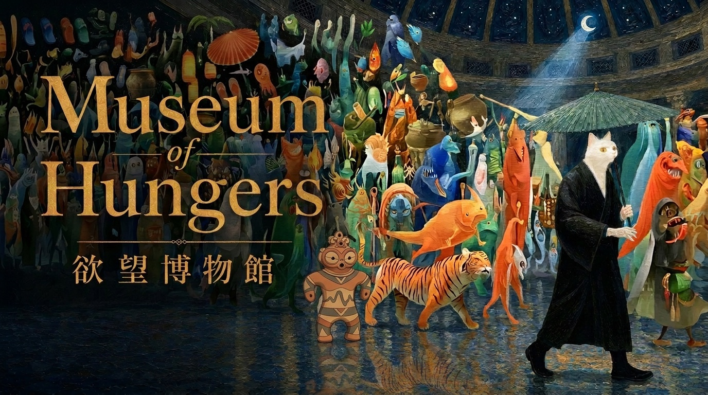
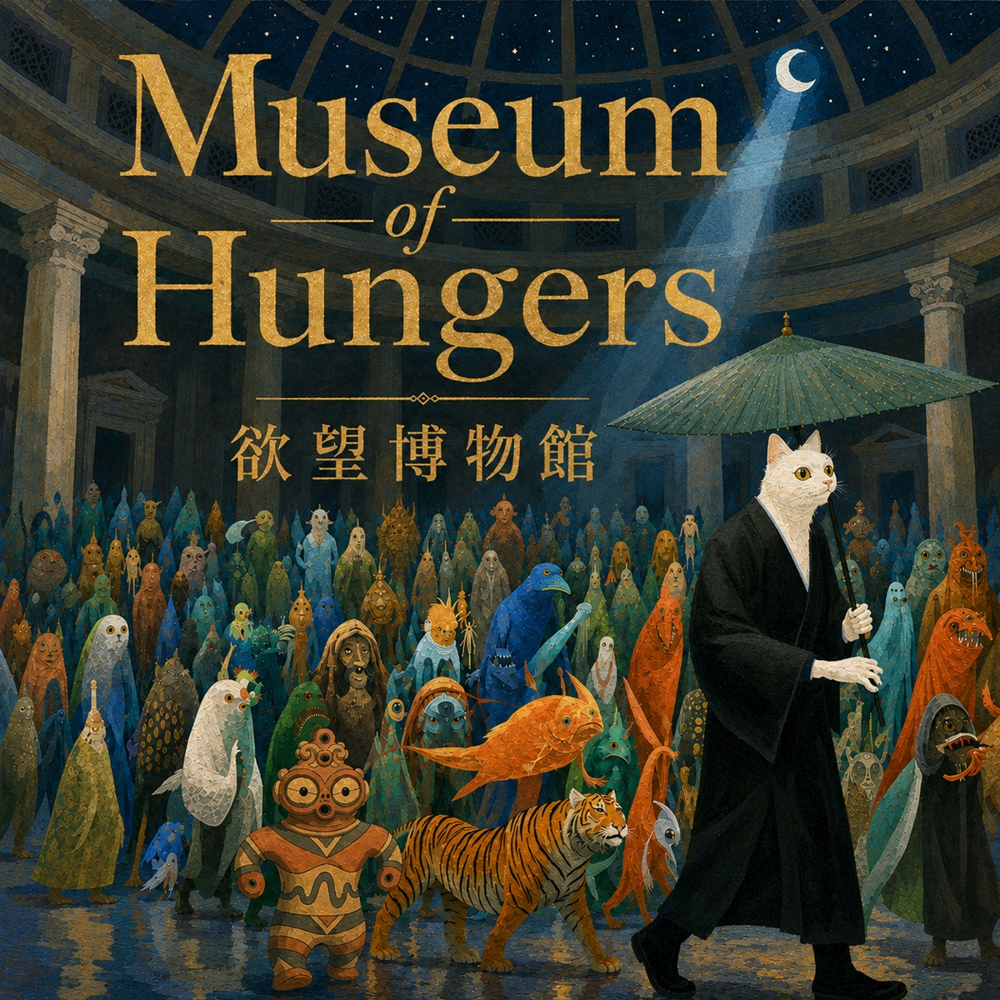
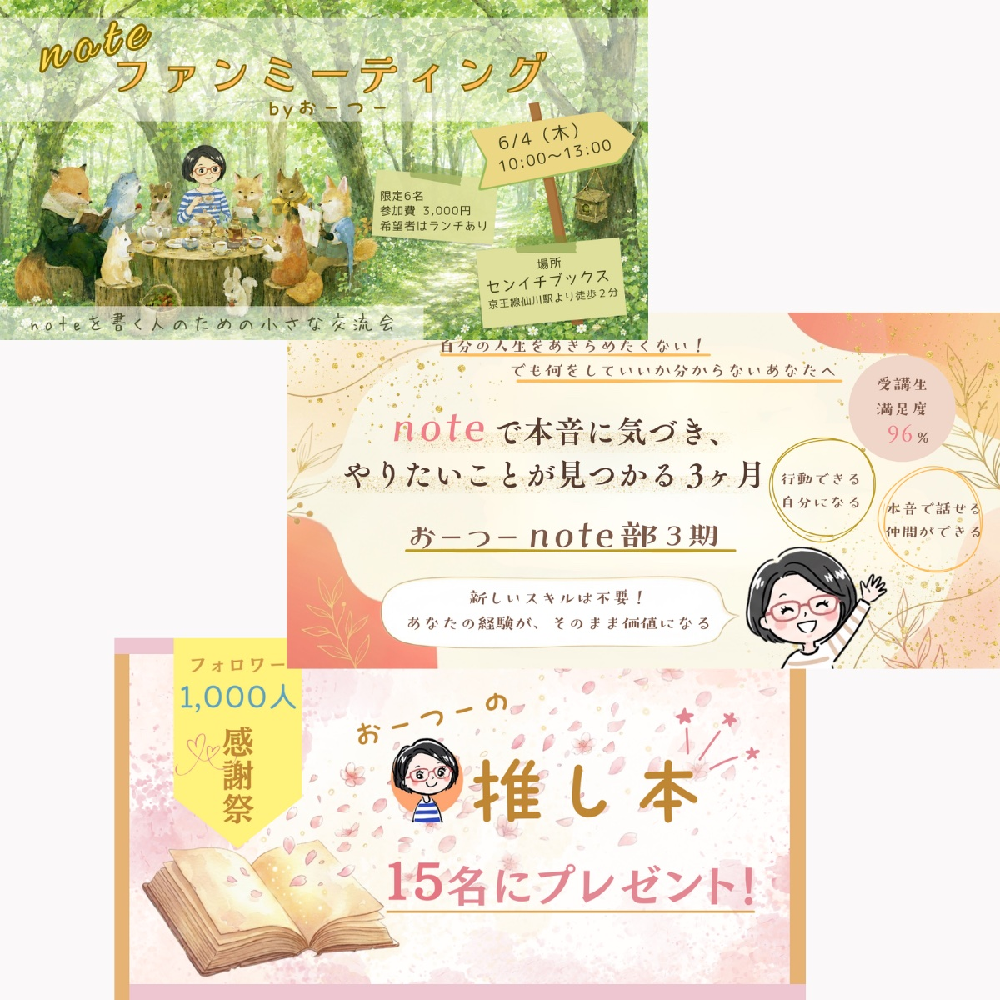
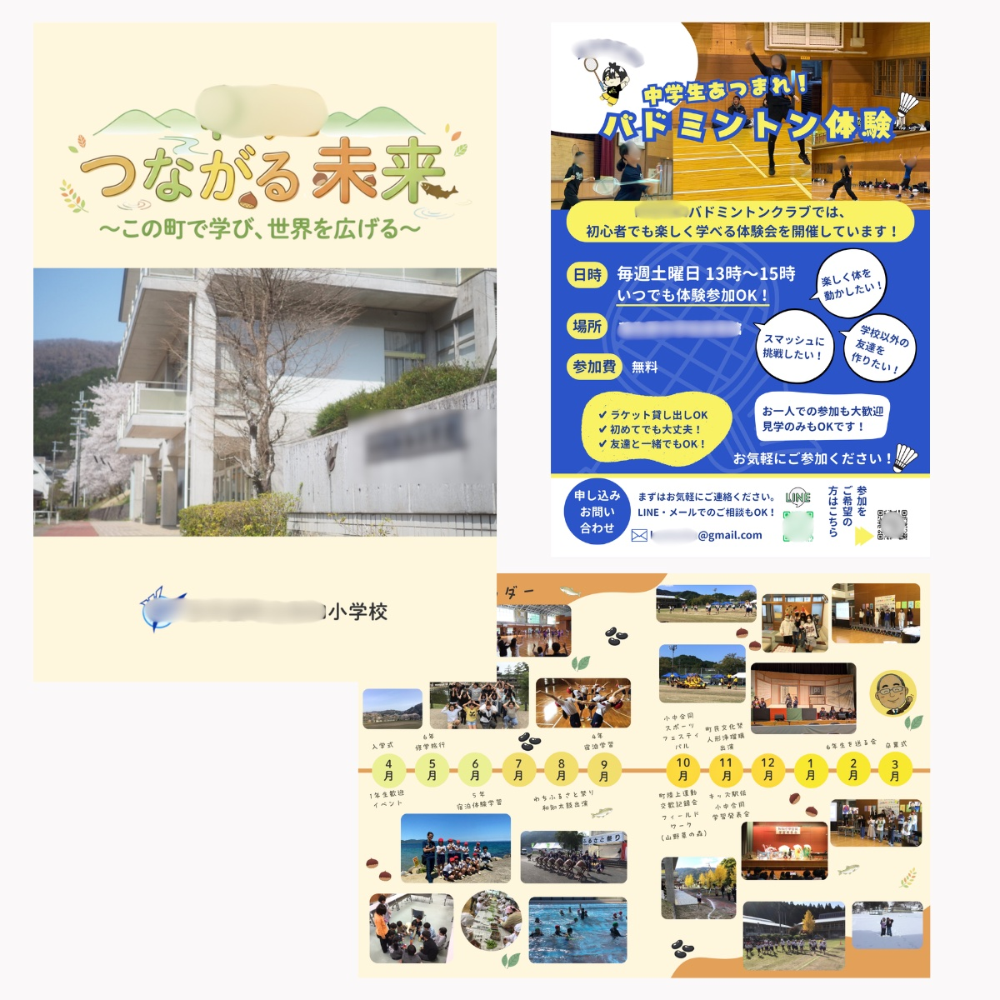

Works
作品展示室
✦
Museum of Hungers欲望博物館（自主プロジェクト）

2026.8.4 開館
欲望博物館 ― Museum of Hungers ―
「人類の欲望を収蔵する博物館」。13曲のメタルアルバム・MV・Webサイトを束ねた、歴史×音楽の自主制作プロジェクト。企画・作詞作曲・映像・サイト制作まで一貫して手がけています。
博物館へ入る
Music Video
Museum of Hungers ― 欲望博物館 ―
表題曲のミュージックビデオ。実在の美術作品とAI映像で、夜の博物館をめぐります。
YouTubeで見る
Full Album
アルバム（全13曲）
Spotify・Apple Music・Amazon Musicで配信中。
Spotifyで聴くAI AnimationAIアニメ・映像


History × Music歴史 × 音楽


Local & Community地域・応援
CM Movie
デジタル城下町CM
お城や城下町を楽しみ、地域を盛り上げるプロジェクト。もっと多くの人に伝えたくて制作しました。
Interview
松江市インタビュー記事
松江の人たちが持つ、土地やお城への愛情と熱量。イベントそのものだけでなく、裏側の想いや情熱を多くの人に届けたいと思い執筆しました。
noteで読む
Design Support
コンテンツ制作 長期サポート
おーつーさんの活動に共感し、デザイン面でサポート。太陽のような人柄と熱量を、それぞれのデザインに合わせて表現しています。

Pamphlet / Flyer
地域活動のパンフレット・チラシ
地域の活動を応援するパンフレットやチラシを制作しています。